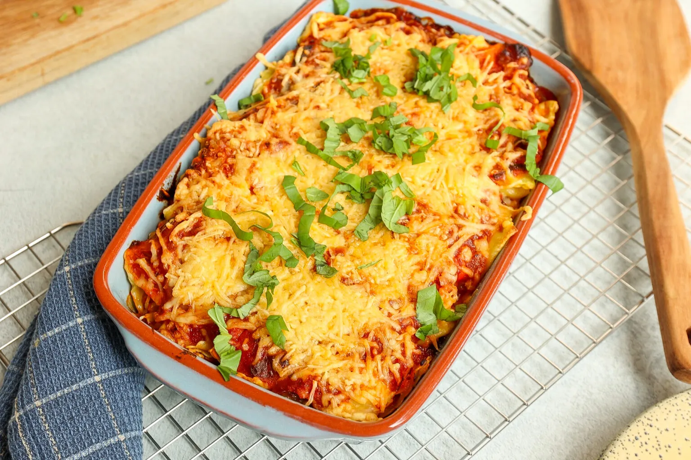

Ravioli pasta

Ingredienten
- 500 gr ravioli
- 100 gr ricotta
- 100 gr geraspte kaas
- evt pesto
- 1 ui
- 2 tenen knoflook
- 500 ml passata (Heinz)
- 250 gr Italiaanse wokgroenten
- 2 tl Italiaanse kruiden
- snufje zout en peper
Bereiding
- Kook de ravioli volgens de instructies op de verpakking. Giet daarna af.
- Snipper de ui en snijd de knoflook fijn.
- Giet een scheutje olie in een diepe pan en voeg de ui en knoflook toe
- Voeg na 3 minuten de wokgroenten en kruiden toe. Bak dit 5 minuten mee.
- Voeg de passata toe en meng alles door elkaar.
- Laat de saus minimaal 5-10 minuten pruttelen.
- Verwarm de oven voor op 200 graden.
- Verdeel 1/3 van de saus over een ingevette ovenschaal
- Daarna 1/3 van de ravioli.
- Daarna 1/3 van de ricotta.
- Vervolgens weer 1/3 van de tomatensaus, 1/3 ravioli en 1/3 ricotta. Daarna de ravioli, ricotta en de tomatensaus. Maak af met wat geraspte kaas.
- Bak 15 minuten in de oven.
- Lekker met wat (verse) pesto
h